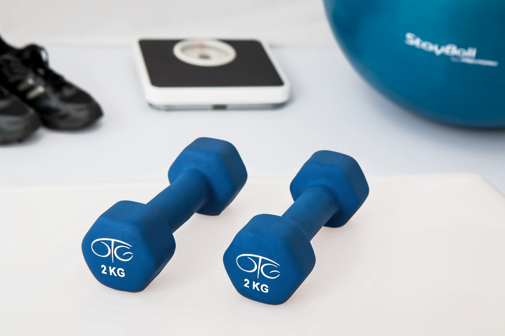
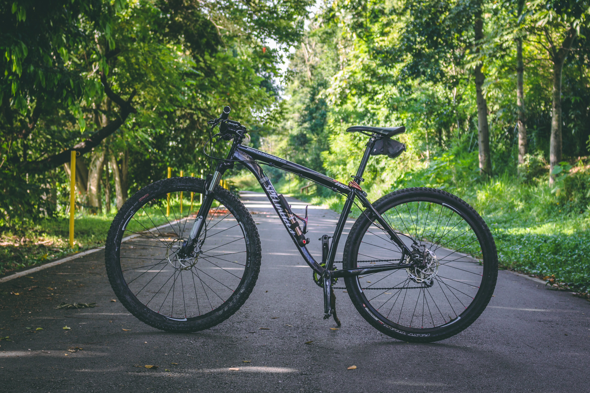
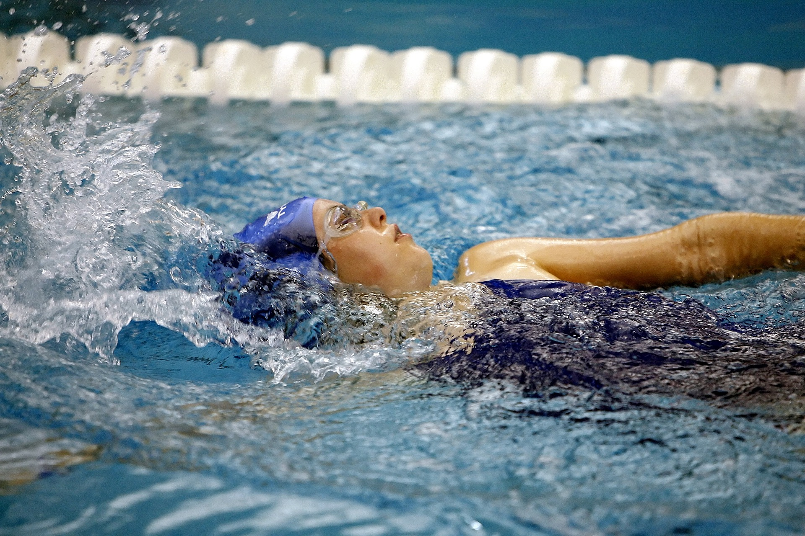
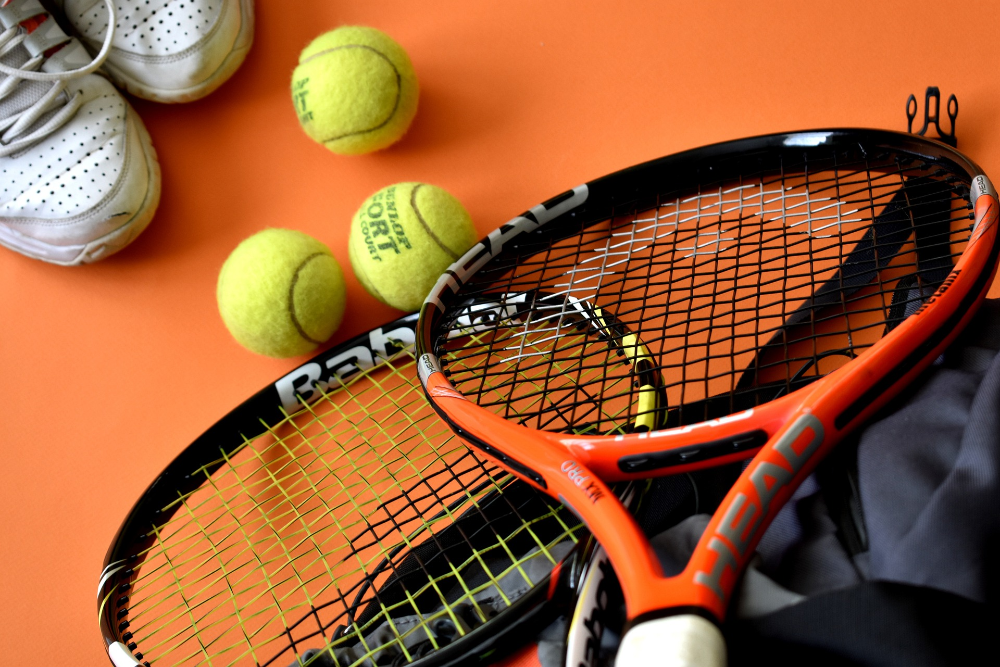
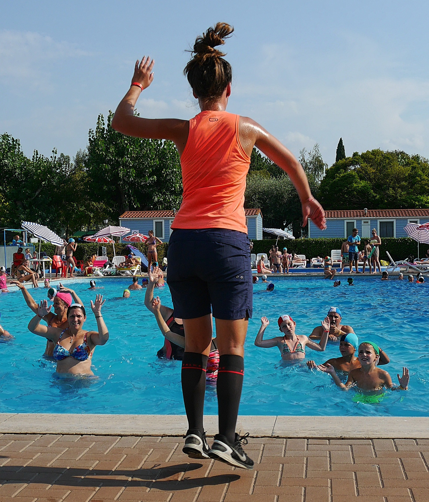
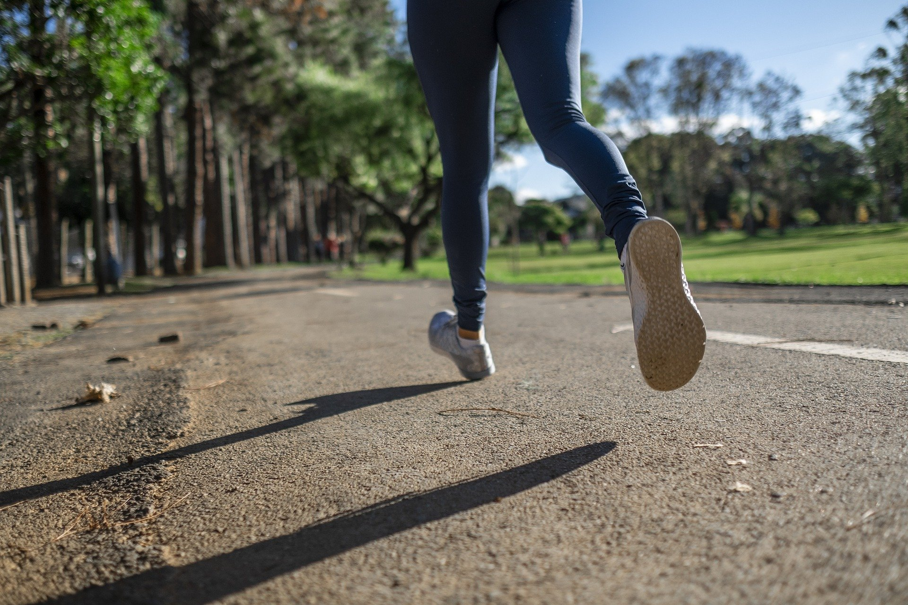

내 키 : {{ bmi_list[0].user_height }} cm
내 몸무게 : {{ bmi_list[0].user_weight }} kg
내 BMI 지수 : {{ bmi_data }}
{% if bmi_data <= 18.5 %}비만도 결과 : 저체중
근감소증 예방과 근육량 증가를 위한 저항성 운동에 집중해야 합니다.
중량물을 이용한 웨이트트레이닝 혹은 탄력밴드나 체중을 이용한 저항운동도 좋습니다.
싸이클 및 수영은 인체의 가장 큰 근육인 하체 근육을 집중 발달시키는 동시에, 심폐 체력 향상에도 매우 좋습니다.
추천 운동
{% elif bmi_data > 18.5 and bmi_data <25 %}

웨이트 트레이닝

싸이클

수영
비만도 결과 : 정상
건강한 일반 성인을 위한 미국스포츠의학회(ACSM)의 FITT를 권장합니다.
주 3-5일, 주당 150분 이상의 중~고강도 유산소운동,
주 2-3일, 1RM의 50~80% 강도의 저항성 운동과 약간의 긴장감이 느껴지는 정도의 정적 스트레칭
추천 운동
(테니스/배드민턴)
웨이트 트레이닝
등산
{% else %}

라켓 스포츠(테니스/배드민턴)
비만도 결과 : 비만
비만한 사람의 경우 과도한 부하로 인한 근골격계 질환을 방지하며
고혈압, 고혈당, 고지혈증 등으로 인한 대사성질환 예방에 집중해야 합니다.
미국스포츠의학회(ACSM)에 의하면 주 5일 이상의 유산소운동과, 주 2-3회의 저항성운동 및 스트레칭을 권장합니다.
추천 운동
싸이클
{% endif %}

아쿠아로빅

빠르게 걷기